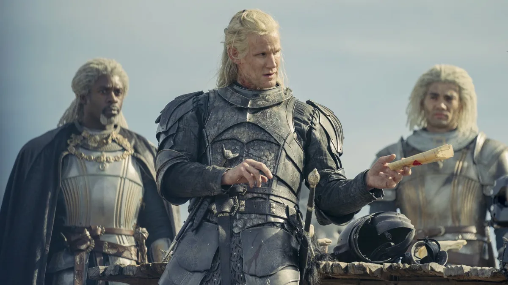

“When I’m Queen, I Will Create A New Order.”
Základné informácie
| Vek |
Pohlavie |
Rola |
Herci |
| Narodená v roku 97 po dobytí |
Ženské |
Hlavná |
Emma D`Arcy, Milly Alcock |
| Polročná kráľovná, Radosť ríše |
Rhaenyra Targarien, narodená v roku 97 po dobytí, bola jediným živým potomkom kráľa
Viserysa I. a jeho prvej manželky lady Aemmy Arryn. Mala dvoch bratov, ktorí však zomreli
krátko po narodení.
Dračím jazdcom sa stala vo veku 7 rokov, kedy sa jej podarilo skrotiť mladého draka, ktorému dala meno
Syrax (podľa výkladu majstra Yandela je Syrax samica). Vo veku 8 rokov bola menovaná dedičkou trónu a očakávalo sa,
že sa stane prvou vládnucou kráľovnou Westerosu (Západozemia). Jej nárok na trón bol zpochybnení nevlastným bratom
Aegonom II., čo zapríčinilo krvavú občiansku vojnu, známu ako Tanec Drakov.
Vzhľad a charakter
Mala typické valyrijské črty a striebornozlaté vlasy. V mladosti bola popisovaná ako to najkrajšie
dievča v Siedmich kráľovstvách. Taktiež bola veľmi hrdá a tvrdohlavá, ľahko sa rozčúlila, no napriek tomu dokázala byť veľmi okúzľujúca.
Deti
- Jacaerys Velaryon/Targaryen
- Lucerys Velaryon
- Joffrey Velaryon
- Aegon III Targaryen
- Viserys II Targaryen
Vzťahy
- Viserys I. Targaryen - otec
- Aemmy Arryn - matka, zomrela pri pôrode 3.-teho dieťaťa
- Alicent Hightower - v rannom detstve kamarátka, neskôr sa vydala za Rhaenyrinha otca
- Ser Criston Cole - milenec č. 1
- Laenor Velaryon - manžel č. 1
- Harwin Strong - milenec č. 2
- Daemon Targaryen - strýko, manžel č. 2
Daemon Targaryen

"Dreams Didn't Make Us Kings. Dragons Did."
Základné informácie
| Vek |
Pohlavie |
Rola |
Herci |
| Narodený v roku 81 po dobytí |
Mužské |
Hlavná |
Matt Smith |
| Dračí Jazdec, Princ, Veliteľ Mestskej Hliadky |
Bol druhorodeným synom princa Baelona Targaryena a jeho sestry (manželky) princezny Alyssy Targeryen. Narodil sa počas
vlády jeho starého otca Jaehaerysa I Targaryena. Mal jedného staršieho brata, Viserysa, a mladšieho brata Aegona, ktorý zomrel ako dieťa.
Bol vyhlásený za rytiera vo veku 16 rokov.
Vzhľad a charakter
Daemon bol opísaný majstrom Yandelom ako temperamentný, odvážny a nebezpečný, avšak aj milosrdný.
Archmajster Gyldayn napísal, že Daemon bol ambiciózny, impulzívny, náladový a tak okúzľujúci, ako
horkokrvný.
Daemon je veľmi dobrý bojovník a lovec. Bol neverný svojej tretej žene, Rhaenyre Targaryen; stretával sa s Mysariou
a pravdepodobne aj s Nettles. Mal veľa priateľov v Kráľovskom meste, rovnako ako aj v Pentose. Napriek tomu bol
veľmi nenávidený Ottom Hightowerom.
Podľa knihy mal Daemon strieborné vlasy a nosil plátové brnenie. Pokiaľ bol veliteľom Mestskej Hliadky, nosil
zlatý plášť s trojhlavým drakom rodu Targaryenov. Nosil zo sebou Tmavú Sestru, meč z Valýrijskej ocele a jazdil na drakovi
menom Caraxes.
Deti
- Balea Targaryen
- Rhaena Targaryen
- Vysenya Targaryen
- Aegon III Targaryen
- Viserys II Targaryen
Vzťahy
- Viserys I. Targaryen - brat
- Rhaenyra Targaryen - neter, manželka č.3
- Rhea Royce - maželka č. 1
- Leana Velaryon- manželka č. 2
- Mysaria - milenka
- Nettles - milenka